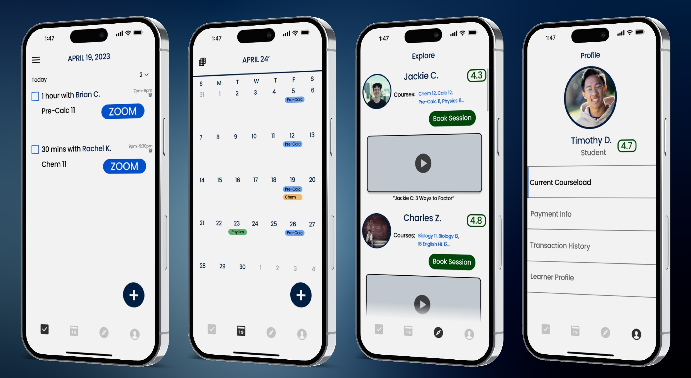
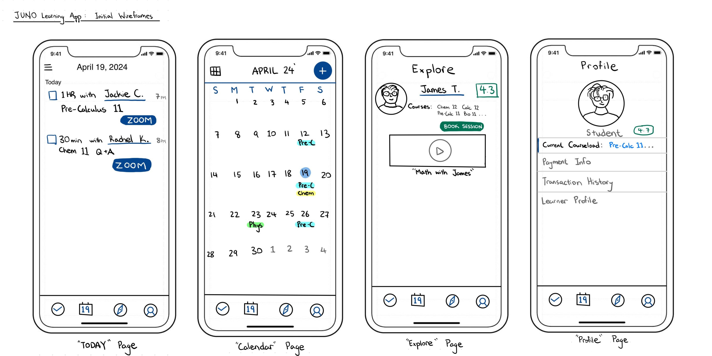
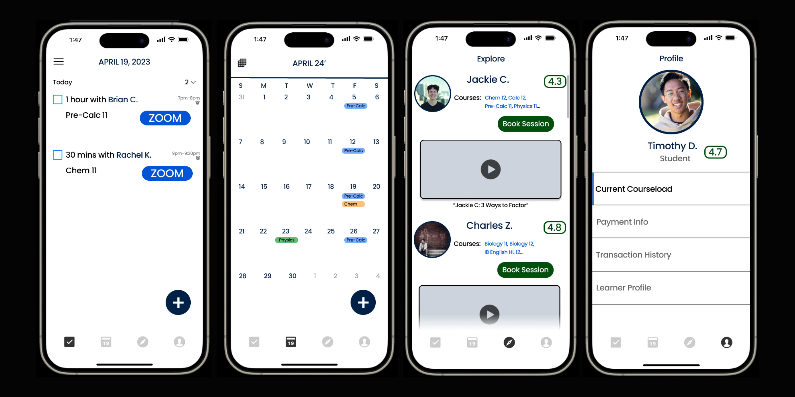

JUNO Learning
Problem Identification
During my first year at the University of British Columbia, one of my neighbours gave me a call seeking a Pre-Calculus 11 math tutor for her daughter. Despite never having tutored math before, I seized the opportunity. The initial sessions were successful, leading to referrals and a growing number of clients. This experience illuminated a significant need in my community.
As I had struggled with STEM subjects myself during high school, I recall often relying on online resources like YouTube tutorials and Khan Academy. Yet, these methods are not effective for all students. As I tutored a variety of students, I realized every student learns a little differently, and the educational system cannot possible accomodate all learning styles. I was motivated to dive deeper into the problem space. My two main hypothesis to verify were:.
- Every student learns differently.
- Any student can master any subject with the right guidance and support.
User Research
My research process involved creating a survey, and asking over 100 local high school students to answer. Furthermore, I also conducted in-person interviews with 15 students who I had been tutoring, this pool included honour roll students, athletes, and neurodivergent students.


As my tutoring business expanded, managing logistics became increasingly tedious. Scheduling sessions, handling reschedules, and maintaining calendar updates through texts became a logistical maze. I aspired to leverage my academic learnings to create a solution, leading to the development of the JUNO Learning app.
The Design
Key user stories driving the app design included:
- Scheduling and managing sessions effortlessly.
- Exploring local tutors.
- Streamlining logistical elements (Zoom links, payment, reminders) within the app.
I initiated the design process with wireframes.
Figma Mockups
After the wireframes, I began designing the app with Figma. I gained greater confidence and skills in using Figma, specifically in Frame organization and utilizing the Auto Layout function for a smoother design process.
Key Features
“Today” Page: Auto-updated daily, streamlining session management. The intuitive Zoom meeting button simplifies meeting setups, a feature born out of firsthand tutoring experience.
“Calendar” Page: Provides an organized monthly view of sessions, aiding in effective scheduling.
“Explore” Page: Allows students to discover tutors in their area, view their ratings, offered courses, and sample teaching videos. This fosters better tutor-student matches.
“Profile” Page: A hub for logistical information - current course load, payment details, transaction history, and a 'Learner Profile' showcasing achievements.
Lessons Learned
JUNO Learning has been a journey of immense growth and learning. It's been incredibly rewarding to aid students from diverse backgrounds, from student athletes to aspiring STEM leaders, in achieving their unique academic goals. Additionally, this venture has taught me invaluable lessons in business development and honed my UI/UX design skills. I can't wait to see what the future of JUNO holds.
Thank you for exploring my projects! Looking forward to connecting and sharing more.